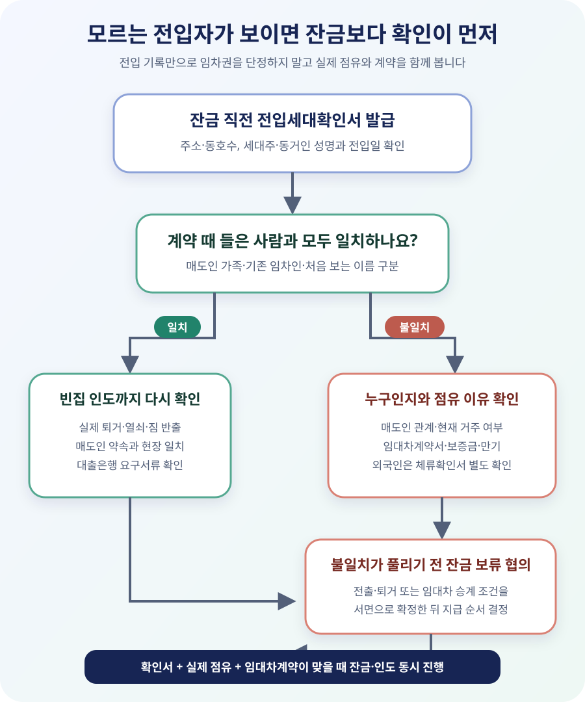

이 확인서는 ‘전입한 사람’과 ‘전입일’을 보여 줍니다
전입세대확인서는 특정 주소에 주민등록이 되어 있는 세대주와 주민등록표상 동거인의 성명, 전입일자를 확인하는 서류입니다. 예전에는 전입세대열람내역서·전입세대열람원이라는 표현을 많이 썼지만, 현행 법령과 정부24에서는 전입세대확인서라고 부릅니다.
주민등록법 제29조의2는 말소되거나 거주불명 등록된 사람을 포함한 전입세대 정보를 열람·교부할 수 있는 근거를 둡니다. 신청서에서 말소자·거주불명자의 표시 여부를 선택할 수 있으므로, 매매 안전 확인 목적이라면 어떤 범위로 발급했는지도 확인해야 합니다.
하지만 이 서류에 임대차보증금, 월세, 계약기간, 확정일자, 실제 거주 여부가 모두 나오는 것은 아닙니다. 이름이 있다는 사실만으로 대항력 있는 임차인이라고 단정할 수 없고, 반대로 이름이 없다고 실제 점유자가 절대 없다고 보장하지도 않습니다. 주민등록과 실제 점유가 어긋나거나 외국인이 별도 체류 신고를 한 경우가 있기 때문입니다.
| 확인 가능 | 확인서만으로는 알 수 없음 | 추가 자료 |
|---|---|---|
| 세대주·동거인 성명 | 매도인과의 가족관계 | 매도인 설명·가족관계 자료 |
| 각 사람의 전입일 | 실제 입주·퇴거일 | 현장 확인·열쇠·짐 반출 |
| 선택 시 말소·거주불명 기록 | 보증금·월세·계약 만기 | 임대차계약서 원본·입금내역 |
| 해당 주소의 주민등록 상태 | 확정일자·우선변제 순위 | 확정일자 부여현황·등기부 |
매매계약을 쓴 매수인도 잔금 전에 신청할 수 있습니다
정부24 전입세대확인서 안내에 따르면 소유자·임차인뿐 아니라 매매계약자와 임대차계약자도 신청할 수 있습니다. 온라인 발급 민원이 아니라 방문 신청이므로, 신분증과 매매계약자임을 증명할 계약서 등 구비서류를 챙겨 주민센터 등 열람·등초본 교부기관에 가야 합니다. 정부24 안내상 처리기간은 즉시이고 수수료는 열람 300원, 교부 400원 또는 500원입니다.
주민등록법 시행령 제49조의2는 신청서, 신분증명서와 신청 자격을 입증하는 서류를 내도록 정합니다. 시행규칙 제14조에 따라 주민등록정보시스템으로 다른 관할 소재 건물의 확인서도 열람·교부할 수 있으므로, 반드시 물건지 주민센터만 가능한 것은 아닙니다. 다만 실제 접수 가능 시간과 구비서류는 방문 전 해당 기관에 확인하세요.
주소는 계약서와 한 글자씩 맞춰 적으세요. 아파트라면 동·호수까지 정확해야 하고, 다가구·상가주택처럼 주소 체계가 복잡하면 건축물대장과 계약서의 지번·도로명·상세주소를 함께 대조해야 합니다. 주소를 잘못 넣어 ‘전입자 없음’으로 나온 서류는 안전 확인 자료가 되지 못합니다.
계약할 때는 이미 존재하는 임대차와 점유관계를 확인하고, 잔금 직전에는 그 사이 새 전입이 생겼거나 퇴거 약속이 지켜졌는지 다시 봅니다. 발급일이 오래된 서류를 잔금일 자료로 쓰지 말고, 대출은행이 별도 유효기간이나 제출 방식을 요구하는지도 확인하세요.
모르는 이름이 나오면 ‘누구인지’부터 서면으로 확인하세요
가장 흔한 경우는 매도인의 배우자·성인 자녀 등 가족이 함께 전입한 경우입니다. 가족이고 임대차가 없다면 그 사실과 잔금일 퇴거·인도 일정을 확인하면 됩니다. 이미 이사한 이전 임차인이 전출신고만 하지 않은 경우도 있습니다. 이때는 “실제로 안 산다”는 말만 듣지 말고 매도인에게 해당 사람과 연락해 전출 정리 시점과 현재 점유가 없다는 근거를 확인해 달라고 요청하세요.
실제 임차인이라면 임대차계약서 원본을 대조해 보증금, 월세, 계약기간, 특약과 퇴거 합의를 확인해야 합니다. 매수인이 임대차를 승계하는 조건으로 산 집인지, 매도인이 보증금을 반환하고 빈집으로 넘기기로 한 집인지에 따라 잔금 계산이 완전히 달라집니다. 매매계약서에 적힌 ‘임대차 없음’ 또는 ‘잔금일까지 명도’ 약정과 실제 자료가 다르면 중개사와 매도인에게 불일치 원인과 해결 방식을 서면으로 요구하세요.
주택임대차보호법 제3조는 임차인이 주택을 인도받고 주민등록을 마치면 다음 날부터 제삼자에게 대항할 수 있도록 하고, 임차주택의 양수인은 임대인의 지위를 승계한다고 정합니다. 따라서 실제 점유와 주민등록을 갖춘 임차인이 있다면 새 소유자가 임대차와 보증금 반환의무를 이어받을 수 있습니다. 전입세대확인서의 이름 하나를 가볍게 넘기면 안 되는 이유입니다.
그렇다고 확인서에 오래된 전입일이 있다는 이유만으로 곧바로 보증금까지 인수되는 것은 아닙니다. 대항력에는 주택의 인도, 즉 실제 점유가 함께 필요하고 계약 내용도 확인해야 합니다. 확인서는 위험을 발견하는 출발점이지 권리관계를 확정하는 판결문이 아닙니다.

8억원 아파트에 처음 보는 B씨가 전입돼 있다면
매수인 A는 매도인이 직접 거주하는 8억원 아파트를 사기로 했고, 계약서에는 임대차가 없으며 잔금과 동시에 빈집으로 인도한다고 적었습니다. 잔금 전날 발급한 전입세대확인서에는 매도인 가족 외에 B씨가 3년 전 전입한 것으로 나왔습니다. 이때 A가 바로 “불법 세입자”라고 결론 내리거나, 반대로 중개사의 “예전 사람일 것”이라는 말만 믿고 7억원의 잔금을 보내는 것은 모두 성급합니다.
| 확인 결과 | 위험 | 잔금 전 처리 |
|---|---|---|
| B씨는 매도인의 가족 | 임대차는 없지만 퇴거·전출 지연 가능 | 짐 반출·열쇠 인도·전출 일정 확인 |
| 과거 임차인, 이미 퇴거 | 주민등록만 남은 상태인지 불명확 | 현재 점유 없음과 전출 정리 확인 |
| 보증금 3억원 실제 임차인 | 임대차·보증금 반환의무 승계 가능 | 계약서 대조 후 퇴거 또는 승계·잔금 공제 합의 |
| 매도인도 모르는 사람 | 명의·점유·주소 오류 가능성 | 원인 확인과 정정 전 송금 일정 재협의 |
B씨가 보증금 3억원의 임차인이고 A가 그 임대차를 승계하기로 했다면 단순히 8억원 전액을 매도인에게 보내서는 안 됩니다. 매매대금 중 어떤 금액을 임대차보증금 승계분으로 보고 현금 잔금을 얼마로 할지 계약서와 정산서에 적어야 합니다. 반대로 매도인이 B씨에게 보증금을 반환하고 빈집으로 넘기기로 했다면, 반환·퇴거·열쇠 인도와 잔금 지급이 실제로 맞물리도록 일정을 정해야 합니다.
계약 내용과 다른 점유자가 확인된다고 매수인이 언제나 즉시 계약을 해제할 수 있는 것도 아닙니다. 매도인의 의무, 시정 가능성, 이행기와 최고 여부는 계약서와 민법에 따라 달라집니다. 잔금 보류나 계약 해제를 검토할 때는 일방적으로 기한을 넘기기보다 불일치 내용과 필요한 조치를 서면 통지하고, 금액이 크면 법률전문가에게 계약서를 보여 주는 편이 안전합니다.
외국인이 거주하면 확인서에 모두 나오나요?
전입세대확인서는 주민등록 정보를 기준으로 합니다. 외국인이 해당 주소를 체류지로 신고했다면 별도의 외국인체류확인서를 확인해야 할 수 있습니다. 정부24는 소유자·임차인·매매계약자 등이 방문해 열람·발급받는 민원으로 안내합니다. 따라서 전입세대확인서에 내국인 이름이 없다는 이유만으로 점유자가 전혀 없다고 결론 내리지 마세요.
집을 보러 갔을 때 외국인 거주 정황이 있었거나 매도인이 외국인 임차인이 있다고 설명했다면 체류확인서와 임대차계약서를 함께 요청하세요. 실제 점유자가 누구인지, 보증금을 누가 돌려줘야 하는지와 퇴거 일정은 국적과 무관하게 매매계약서에 분명히 적어야 합니다.
잔금일에는 확인서만 새로 떼면 끝날까요?
잔금일에는 전입세대확인서, 등기사항증명서, 실제 주택 상태를 서로 맞춰 봐야 합니다. 등기부는 소유권과 근저당권·가압류 같은 등기된 권리를 보여 주고, 전입세대확인서는 주민등록 상태를 보여 주며, 현장 확인은 실제 점유와 짐 반출 여부를 보여 줍니다. 어느 하나가 다른 두 자료를 대신하지 않습니다.
먼저 최신 등기부에서 계약 후 새 권리제한이 생기지 않았는지 확인하고, 확인서의 이름을 계약 때 파악한 거주자 명단과 대조합니다. 빈집으로 넘겨받는 계약이라면 실내 짐이 빠졌는지, 열쇠·비밀번호·공동현관 출입수단을 모두 받는지 확인합니다. 관리사무소에 입주자 변경과 관리비 정산을 문의하는 것도 실제 인도 상태를 점검하는 데 도움이 됩니다.
전출신고를 접수했다는 화면만으로 실제 점유가 끝났다고 단정하지 마세요. 반대로 행정 반영에 시간이 걸려 확인서에 이름이 남아 있다면 접수증, 실제 퇴거, 열쇠 인도와 임대차 종료 자료를 함께 확인하고 대출은행·법무사와 지급 순서를 조정해야 합니다. 잔금 지급, 소유권이전등기 서류 교부와 주택 인도는 가능한 한 같은 자리에서 맞물리게 진행하세요.
잔금 전에 새 근저당·가압류가 생긴 경우도 마찬가지입니다. 문제가 발견됐다는 사실과 계약을 바로 해제할 수 있다는 결론은 다릅니다. 먼저 계약과 다른 상태를 특정하고 매도인이 잔금과 동시에 해소할 수 있는지, 시정하지 않으면 어떤 절차를 밟을지 확인해야 합니다.
확인서에는 이름이 없는데 사람이 살고 있다면?
현장에는 사람이 살고 있는데 전입세대확인서가 비어 있다면 확인서 쪽만 믿어서는 안 됩니다. 전입신고를 하지 않은 임차인, 단기 점유자, 가족이나 지인, 외국인 체류자일 수 있습니다. 현재 점유자에게 어떤 근거로 거주하는지 매도인을 통해 확인하고, 임대차계약서·사용대차 약정·보증금 지급자료가 있는지 요청하세요. 매수인이 직접 찾아가 퇴거를 압박하면 별도 분쟁이 생길 수 있으므로 매도인과 중개사를 통해 사실관계를 정리하는 편이 안전합니다.
주택임대차보호법상 대항력은 주택의 인도와 주민등록을 함께 갖춰야 생기지만, 주민등록이 없다는 이유만으로 점유자를 즉시 내보낼 수 있다는 뜻은 아닙니다. 점유를 넘겨받기로 한 매매계약의 이행 문제와 점유자가 주장하는 계약관계를 별도로 확인해야 합니다. 잔금일까지 매도인이 빈집을 인도하기로 했다면 누가 언제 퇴거하고 열쇠를 넘기는지, 지연될 때 잔금과 소유권이전 일정을 어떻게 조정할지를 서면으로 남기세요.
서류상 주민등록, 현장의 실제 점유, 임대차계약은 서로 다른 자료입니다. 셋 중 하나라도 맞지 않으면 이유를 밝히고 계약서상 인도 조건과 맞춘 뒤 잔금을 진행하세요.
잔금 송금 버튼을 누르기 전 체크리스트
- □ 매매계약서와 신분증을 준비해 최신 전입세대확인서를 발급했다.
- □ 주소와 동·호수가 계약서·등기부·건축물대장과 정확히 일치한다.
- □ 말소자·거주불명자 표시 여부까지 확인했다.
- □ 확인서의 모든 이름과 전입일을 매도인 설명과 대조했다.
- □ 실제 거주자, 짐 반출, 열쇠 인도 상태를 현장에서 확인했다.
- □ 임차인이 있다면 계약서·보증금·만기·확정일자 자료를 대조했다.
- □ 외국인 거주 가능성이 있으면 외국인체류확인서를 별도로 확인했다.
- □ 퇴거·전출 또는 임대차 승계와 보증금 공제 내용을 서면에 적었다.
- □ 최신 등기부와 대출은행·법무사의 잔금 조건도 함께 확인했다.
공식 근거
- 정부24 — 전입세대확인서 열람·발급
- 국가법령정보센터 — 주민등록법 제29조의2
- 국가법령정보센터 — 주민등록법 시행령 제49조의2
- 국가법령정보센터 — 주민등록법 시행규칙 제14조
- 국가법령정보센터 — 주택임대차보호법 제3조
- 정부24 — 외국인체류확인서 열람·발급
정보 기준일: 2026-10-03. 전입세대확인서는 주민등록 상태를 보여 주는 자료이며 임차권·보증금·실제 점유를 단독으로 확정하지 않습니다. 실제 잔금 지급, 보증금 승계, 계약 해제 가능성은 매매·임대차계약과 점유 상태, 대항요건, 개별 특약에 따라 달라질 수 있습니다. 이 글은 개별 사건에 대한 법률 자문이 아닙니다.